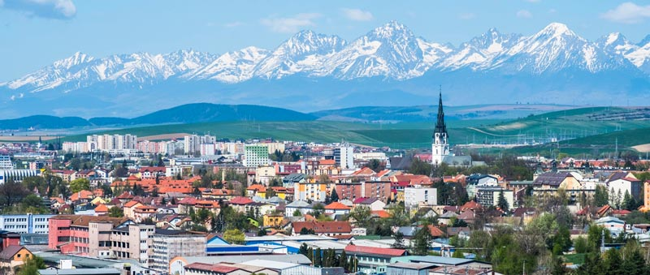
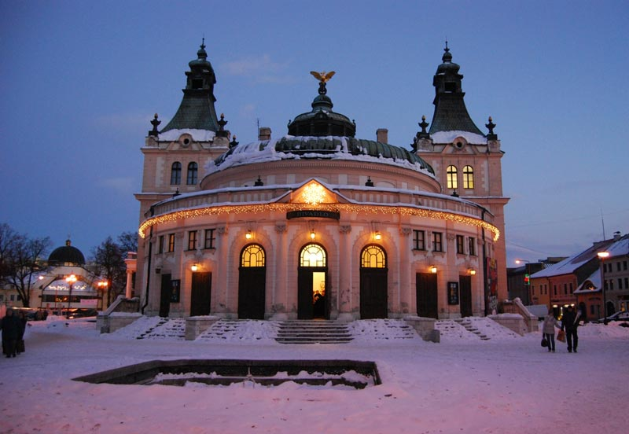
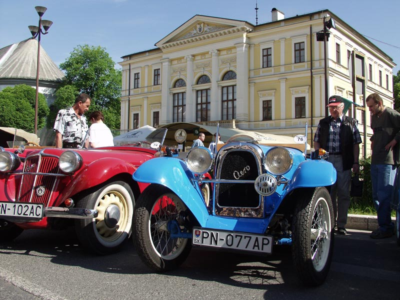
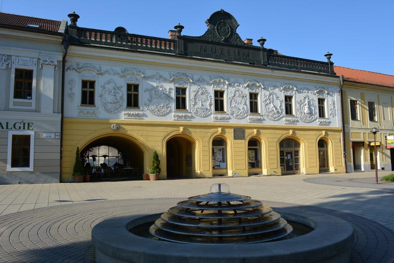
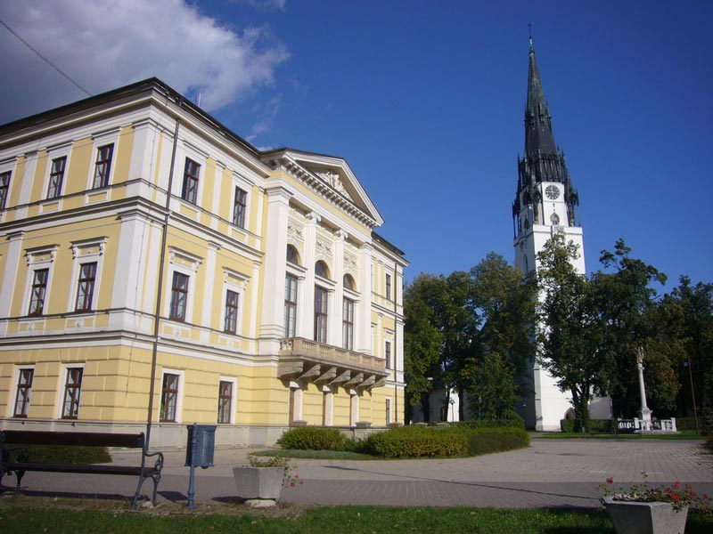

特色旅游
1日游
2-4日游
5-10日游
精品长线旅游
地址：匈牙利 布达佩斯 Budapest-Keleti, 1087
电话：0036-30-9574162
邮件：rrjourneys@gmail.com
网站：http://www.rrjourneys.com
斯洛伐克
斯洛伐克讲斯洛伐克语，全名为斯洛伐克共和国，是一个内陆国家。斯洛伐克的领土面积约49,000平方公里，大部分为山区。人口超过540万，主要由斯洛伐克族裔组成。首都和最大的城市是布拉迪斯拉发，第二大城市是科希策。斯洛伐克的语言斯洛伐克语，全名为斯洛伐克共和国，是一个内陆国家。斯洛伐克的领土面积约49,000平方公里，大部分为山区。人口超过540万，主要由斯洛伐克族 约在5和6个世纪，斯拉夫人就到了现今的斯洛伐克境内。约在10世纪，该领土被并入匈牙利公国，在1000年成为匈牙利王国。1241年蒙古入侵，大部分建筑被摧毁。该地区的恢复和建设归功于匈牙利的贝拉四世。从此德国人成了该地区的重要种族。1989年，天鹅绒革命和平结束了捷克斯洛伐克的共产主义统治。斯洛伐克和平解散后，斯洛伐克于1993年1月1日成为独立国家。 斯洛伐克是高收入的发达经济体，公民自由，新闻自由，互联网自由，民主和平。斯洛伐克公民全民保健，免费教育并且是经合组织中最长的带薪育儿假的国家。该国是欧盟国，欧元区，还是申根国，北约，联合国，经合组织，世贸组织，欧洲核子研究组织，欧安组织，欧洲委员会和维谢格拉德集团。斯洛伐克按人均汽车制造量是世界上最大的国，并且是欧盟第五大汽车生产国，占斯洛伐克工业总产值的43％。
具体行程：
DAY1：布达佩斯-科希策
入住地点：科希策
科希策是斯洛伐克第二大城市。早在1290年科希策就有了城镇特权。它之所以繁盛 ，是和它的国际贸易路线上的战略要地分不开的。同时它作为匈牙利的免费皇室镇，与首都布达享有同等的权利。1369年，匈牙利的路易斯一世赐予了科希策自己的徽章。路易斯一世在卡萨召集的国会议会上，决定女性可以继承匈牙利王位。科希策拥有大约24万人口。该市有保存完好的历史资料，是斯洛伐克城镇中最大的历史中心，哥特式，文艺复兴，巴洛克和新艺术风格的建筑在该市也是到处可见。科希策是斯洛伐克重要的工业中心，美国钢铁科希策钢铁厂是该市最大的雇主。2013年，科希策与法国马赛一起成为欧洲文化之都。
景点：圣伊丽莎白大教堂
圣伊丽莎白大教堂是哥特式的大教堂，长60米，宽36米，北塔的高度为59米，中央教堂中殿长24 m，过道长12 m，总面积为1,200平方米，可容5000人。它是斯洛伐克最大的教堂，也是欧洲东部的哥特式风格的大教堂之一。它是中欧中世纪石雕艺术品的顶峰。大教堂和毗邻建筑物的建筑群–圣迈克尔教堂和城市塔楼在1970年被宣布为文化遗产。
景点：国家大剧院
科希策国家剧院是一家古典剧院，建于前中世纪的市政厅所在地。该建筑始建于古典主义，主舞台是一个历史悠久的新艺术风格的建筑。当前的剧院大楼于1899 年9月28 日开幕，具有折衷主义的新巴洛克风格。该建筑物最初是在匈牙利使用的。1946年，剧院被称为科希策的国家剧院，并于1955年更名为国家剧院。1998年，剧院重获独立，并改回科希策国家大剧院的名称。
DAY2：科希策-斯皮什新村
入住地点：班斯卡·比斯特里察
斯皮什新村
斯皮什卡镇被称为通往斯洛伐克天堂国家公园的门户。就人口而言，是斯皮什的第二大城市，科希策地区的第三大城市（仅次于科希策和米恰洛夫采）。斯拉夫人的居住历史可追溯到8世纪。13世纪下半叶，撒克逊人的殖民者在附近定居并建造了他们的新村庄，该村庄逐渐扩展到当前的斯皮什卡。埃斯泰尔戈姆大主教菲利普于1268年提到的“新奥尔巴普努斯别墅”，就是这个村庄。 中世纪时期，对铜铁和银的权利，使城镇发展起来，还有著名的制铃作坊。1412年起，它属于波兰管辖的城镇。后返回匈牙利。1871年，随着建设科希策博胡明铁路，斯皮什卡逐渐成为该地区的工业和运输中心。50年代就已经享有各种特权，包括城镇组成部分。 
景点：斯洛伐克剧院 斯洛伐克剧院建筑的特殊性在于它们与中欧艺术史和剧院传统的天然联系。剧院建筑的设计者大多是维也纳和布达佩斯的建筑师。 迄今为止，斯洛伐克已保存了八座具有历史价值的剧院建筑。 从布拉迪斯拉发到斯皮什卡的历史可以追溯到一世纪，是建筑艺术历史和戏剧趋势的表率。斯洛伐克一系列历史悠久的剧院建筑中的最后一个是位于新斯科舍省的新艺术风格剧院建筑。像科希策大楼一样，它记录了远东奥匈帝国君主制的奇妙故事。 1863年，安德烈亚斯•罗斯将剧院大厅连接到建筑物的一侧，将未指定的大厅连接到另一侧，将其重建。这在19世纪非常不寻常。建筑师卡尔曼•格斯特通过剧院之外的酒店，音乐厅-堡垒和咖啡厅，设计了今天的新艺术风格建筑。这座令人愉快的浪漫建筑，带有四个转角塔楼，坐落在原始历史广场结束的地方。庞大的入口处以北侧的阳台结束。前部是内部的入口，而屋顶则以竖琴上的天鹅装饰，这预示着这部分有剧院。 斯皮什卡剧院的专业舞台活跃了超过75年的业余合奏团都在这里运作。 
景点：市政厅 斯皮什卡的中世纪市政厅，出售后于1777年建造了当前的市政厅。它以古典主义风格建造，是一座独立的三层楼高的六轴建筑，南北两侧为七轴，具有巨大的轰动性。 从建造到50年代，它一直是城市所有的生活中心。与斯皮什卡有关的最重要的事件，行为和决定都发生在它附近。 市政厅最重要的地方是会议室，它位于建筑物的中间，并延伸到两层楼。从外部看，它的两面都具有很高的装饰性。 拱形束端的高窗，空间装饰的月桂花环和纪念章，城市的徽章，雄壮的狮子等。 
景点：省议院建筑 1777年，省议院建筑被斯皮什镇买下，并在此建立了行政所在地。它位于广场北侧的教区教堂对面。 斯皮什卡镇十六省的徽章被刻在石头上，这是两个狮之间的盾牌。它的上部充满了三个岩石部分（塔特拉山的象征），上面有太阳和一个六角星。下部有两个交叉开关，分别代表霍纳德河和波普拉德河。在中间-徽章的中心是一个小小的盾牌，上面有约瑟夫二世和玛丽亚•特蕾莎的首字母缩写。 在最初用于马车的路旁，有一条较窄的行人通道，用六种装饰物填充了窗户之间的空间。窗户下面是植物装饰品，上方是装饰丰富的窗台。每个墨盒都有自己的图像，图像象征性地表达了一个城市或省级官员必须具备的素质。 1954年以来，斯皮什博物馆就在其中进行了展览。 
景点:圣母玛利亚教堂 圣母玛利亚教堂是斯洛伐克最高的教堂塔楼（87 m），是该市最有价值的艺术和历史古迹。 圣母升天教区教堂是新哥特式，位于城市的正中心。2008年被列入《斯洛伐克纪录册》。 该塔有多面的钟面。其中四个位于顶部，另外三个稍低。它们是原始哥特式塔楼的残迹。该塔楼于1649年重建。 最古老的钟楼是建于1486年，直径为92厘米，两个最大的钟，直径为206厘米，5320公斤重。1930年，特尔纳瓦的菲舍尔钟制造厂铸造了直径为143厘米的彼得钟和直径为118厘米的中间钟。 塔上是四名传教士的木雕像，雕像高3.25 m，重800公斤。 教堂的建筑仍保留了部分原始状态，教堂是一座三栋为基础大厅的建筑，新的多边形封闭式避难所。教堂最美丽的艺术部分之一是南侧的门户。鼓膜非常显眼，其浮雕描绘了上帝之母的加冕礼。艺术美丽的大门上方的浮雕是斯洛伐克最古老的雕塑之一。 教堂的前部-长老会或避难所的历史可追溯到1771年整个避难所的重建，采用巴洛克风格。避难所的穹顶被粉刷成圣灵和天使的图案。建于1789年的巴洛克合唱团的装饰为古典主义的灰泥装饰。最初的哥特式主祭坛于1621年被文艺复兴时期的圣坛取代。但是中心人物始终是教区教堂的守护神-圣母玛利亚。 最有价值的雕塑，十字架，七悲圣母玛利亚和圣约翰，最初站在凯旋门上的横梁上。后将其放置在南部入口的中殿中。在圣殿上方的圣殿里悬挂着一幅罕见的画板，描绘了受难的基督和悲哀的圣母玛丽亚。这幅画是悲伤圣母玛利亚的旧祭坛的一部分。它的历史可以追溯到1500年。 
DAY3：班斯卡·比斯特里察
返回布达佩斯
班斯卡•比斯特里察 班斯卡•比斯特里察是斯洛伐克中部的一座城市。班斯卡•比斯特里卡有7.6万居民，是斯洛伐克第六大人口最多的城市。现在的城镇是由德国移民建立的，是建在以前的斯拉夫定居点上。它很早就获得了市级权限。它是一座历史悠久的城市，是马捷贝尔大学的故乡，可轻松前往周围的群山，是冬季和夏季的热门旅游胜地。
景点：斯洛伐克民族起义广场 斯洛伐克民族起义广场是在班斯卡-比斯特里察的中央区域。600多年来，它一直是这座城市的生活中心和享有盛誉的住所。 20世纪期间，广场上定期举行群众集会，为了纪念第一次民族独立，将其命名民族起义广场。它被咖啡馆，饭店和小商店所点缀，是当地人流连忘返的好去处，并以其历史建筑和视觉吸引力而闻名。13世纪被授予《皇家宪章》之后，广场上居住的“方堡人”在皇家自由镇的公民中享有特殊特权（在县管辖范围以外的直辖市-直属君主，并在国会中有自己的代表）。整个19世纪，林伯格仍是班斯卡•比斯特里察的一个尊敬的“尊敬的公民”。 景点：城市城堡 镇城堡在班斯卡-比斯特里察是特性里程碑，历史核心的符号，班斯卡-比斯特里察有一对洋葱形塔的一个典型的轮廓，位于该正方形的顶部，是国家文化古迹。 城镇城堡是建在原始采矿定居点旁。那时已有一个圣母玛利亚升天的教区教堂，后成为中世纪末新堡垒的中心。城镇城堡的作用是保护收益，防止开采贵重金属及皇家国库。国王和教堂代表住在这里，共同的防御工事可丰富具有各种功能的各个建筑物，这可以保护贵族免受外部敌人和内部动荡的影响，尤其是在采矿起义期间。 最古老的建筑是13世纪下半叶晚期罗马式圣母玛利亚教区教堂。它最初是由一座公墓包围，直到19世纪，藏有罗马人的古代遗骨的墓地一直屹立在此。 15世纪后半叶加强了教区教堂周围的区域，并建造了其它属于政府的采矿城镇。城镇城堡的区域由圣母玛利亚教堂，国王马蒂亚斯国王哥特式房屋（建于1479年），斯洛伐克教堂（圣克里雅教堂1492年），市政厅（1500年），教区建筑和带有堡垒的石制防御工事组成。防御工事由高高的石墙和圆形堡垒组成。设防最重要的部分是外堡，完成于1512年，通过两个大门进入，供马车和行人使用。当时，该教区教堂进行了昂贵的建筑改建，仍然保留着保存完好的带有哥特式十字架拱顶的讲堂，即圣安德鲁教堂的侧面教堂。勒沃扎大师帕维尔（ Barvoa）的芭芭拉（Barbara）和晚期哥特式有翼祭坛，约德大师（Jodok）大师晚期的哥特式青铜洗礼池。祭坛是由列沃察大师保罗制成的，却毁于1761年的一场大火；1767年巴洛克式祭坛代替了它。洋葱形铜屋顶的典型轮廓在这一时期形成。不久市政厅并入了城堡。16世纪下半叶，经历了几处建筑改建，使其具有当今的特色。1546年，它被扩大和重建。1564年，重修改了其外墙，旧的哥特式凉廊，并用带燕尾尾巴的文艺复兴时期的阁楼完成了建筑。 景点：圣母玛利亚升天教堂 圣母玛利亚升天教堂是教区教堂，一栋中殿晚期的哥特式建筑，带有多边形完成的长老会和一座塔楼，该塔楼始建于13世纪，当时是罗马式建筑。塔的下部保留了这段时期的狭窄罗马式窗户。14-15世纪，教堂进行了哥特式重建。1470年以后成为南部的圣约翰教堂。尽管发生了几场毁灭性的大火，但仍保留了哥特式细节。有价值的元素包括哥特式青铜洗礼台，基督在橄榄山的雕像。教堂在1761年左右被装饰成巴洛克式风格，当时教堂被毁灭性大火吞没。1774年安东施密特创造了巴洛克风格的圣母升天和三位一体的绘画主坛。
Slovakia: The Heart of Europe
Right in the heart of Europe, Slovakia is a land of castles and mountains, occasionally punctuated by industrial sprawl. More than a quarter-century after Czechoslovakia's break-up, Slovakia has emerged as a self-assured, independent nation. Slovakia shines brightest for lovers of history, nature and the outdoors.
时间
地点
景点（可以 +/- ）
入住地点
第一天
布达佩斯出发260公里
科希策
Košice
The Singing Fountain会唱歌的喷泉, 圣伊丽莎白主教座堂, Jakab's Palace, Mikluš prison, Old Town Hall, Urban Tower, 东斯洛伐克博物馆, St. Michael's Chapel, Slovak Technical Museum, Andrášiho palác, Crafts Lane, Lookout Tower Košice
第二天
101公里
144公里
斯皮什新村 Spišská Nová Ves
Levočská brána, Spiš Museum, Reduta, Zvon prianí, Tourist Information Centre, Radničné námestie, Gallery artists Spiš
班斯卡·比斯特里察
Banská Bystrica
第三天
181公里到布达佩斯
Benického dom, MUSEUM SNP, Barokový Mariánsky stĺp, bathhouse, Thurzov dom, Banska Bystrica Castle, 圣方济各沙勿略主教座堂, Radnica, Soviet Army Dead Heroes Memorial, Fontána na Námestí SNP, Hodinová veža, mestský park Banská Bystrica
-
6天5夜乌克兰小众深度游
7天6夜克罗地亚、波黑小众
5天4夜波兰、斯洛伐克小众
四天三夜奥地利、斯洛文尼亚
匈牙利最大的滑雪场一日游
6天5夜，奥地利滑雪自由行
7天6夜，奥地利旅游滑雪自
4天3夜，奥地利滑雪自由行
Copyright 2020 www.rrjourneys.com
人人游 旅游官方网站 版权所有 All Rights Reserved